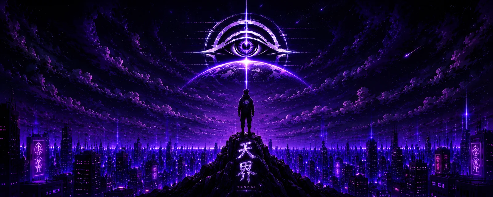

El taller de videojuegos
Fernando convivía con el taller de videojuegos de su hermano. Ver equipos abiertos, instalaciones, fallas y reparaciones convirtió la tecnología en algo que podía explorarse, comprenderse y volver a funcionar.
Tenkai Tenshi
La historia de Fernando Larios: curiosidad, aprendizaje autodidacta y una idea creativa que dejó de pertenecer a una sola disciplina.
La visión
Tenkai Tenshi es una forma de observar, imaginar y construir. No nació para encerrar una idea dentro de una sola empresa o categoría, sino para reunir software, música, diseño, videojuegos, fabricación, ingeniería e inteligencia artificial bajo una identidad propia.
Primero se observa un problema o un mundo que todavía no existe. Después se estudia, se prueba y se construye hasta convertir la idea en algo útil, expresivo o real. La tecnología forma parte del proceso, pero la visión humana decide qué merece existir.
“Para mí, Tenkai Tenshi es creatividad absoluta: la libertad de imaginar una solución, una obra o un mundo y trabajar hasta poder darle forma.”Fernando Larios · Fundador y creador
El nombre une Tenkai —el reino celestial o un plano superior— con Tenshi —ángel—. El ojo representa observación, conciencia y perspectiva: mirar más lejos antes de decidir qué construir.

La historia completa
Tenkai Tenshi no comenzó como una empresa formal. Comenzó mucho antes, con un niño rodeado de computadoras, consolas, programas y reparaciones.
Fernando convivía con el taller de videojuegos de su hermano. Ver equipos abiertos, instalaciones, fallas y reparaciones convirtió la tecnología en algo que podía explorarse, comprenderse y volver a funcionar.
Aprendió de forma autodidacta: observando, probando, instalando, reparando y resolviendo problemas. Cada error dejaba una pregunta nueva y cada solución demostraba que era posible construir algo propio.
Soiral surgió a partir del apellido Larios e inicialmente fue imaginado como Soiral Games. Con el tiempo se convirtió en una firma personal de autor: una marca del creador dentro de los mundos, ideas y obras que deseaba dejar como legado.
La visión creció más allá de los videojuegos. Tenkai Tenshi apareció como un dominio amplio capaz de contener aplicaciones profesionales, música, diseño, fabricación, ingeniería, inteligencia artificial y futuros proyectos sin perder su identidad.
Los productos actuales son una parte visible de esa historia, no su definición completa. Cada aplicación, composición, diseño o experimento pertenece a la misma búsqueda: imaginar con libertad y construir con disciplina.
El legado y el futuro
El futuro mantiene abierto todo lo que todavía podemos construir. Tenkai Tenshi es la continuidad entre ambas cosas: memoria, autoría y posibilidad.